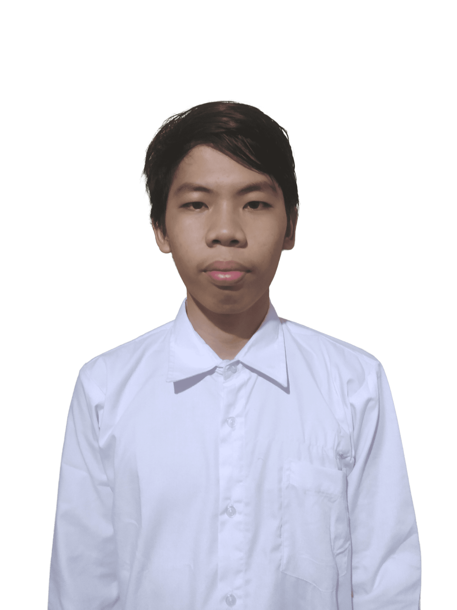

Biodata
Nama : Muhammad Faried Halim
Asal : Tegineneng, Pesawaran
Umur : 19 Tahun
Negara : Indonesia
Tentang Saya
Seorang mahasiswa Institut Teknologi Sumatera (ITERA) program studi Teknik Informatika yang tertarik dengan bidang apapun, terutama bidang keamanan (Security)
Pengalaman
Tidak Ada
Riwayat Pendidikan
- Institut Teknologi Sumatera
Jurusan Teknik Informatika. Masuk tahun 2021. Sekarang masih menempuh Semester 3
- SMA Negeri 7 Bandar Lampung
Jurusan IPA. Masuk tahun 2018. Tahun 2021 lulus
Hubungi Saya

0895 0433 2111

@fariedhalim